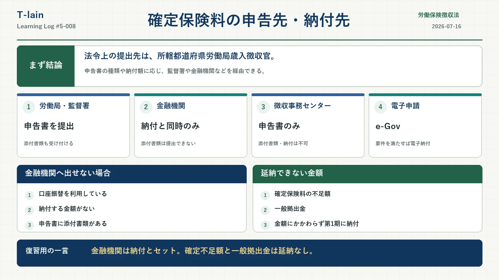

今日のテーマ
労働保険の年度更新で提出する確定保険料申告書について、申告書をどこへ提出し、保険料をどこへ納付するのかを整理する。
申告書の提出と保険料の納付は、同じ窓口で行える場合もある。ただし、申告書の種類、事業の区分、納付額の有無などによって、利用できる提出経路や納付の可否が異なる。
まず結論
確定保険料申告書の法令上の提出先は、所轄都道府県労働局歳入徴収官。申告書の種類などに応じて、労働基準監督署や金融機関などを経由して提出できる。
年度更新における一般的な提出方法には、次のものがある。
- 管轄の都道府県労働局
- 管轄の労働基準監督署
- 金融機関
- 社会保険・労働保険徴収事務センター
- 郵送
- e-Govによる電子申請
ただし、金融機関や社会保険・労働保険徴収事務センターで取り扱えるものには制限がある。また、確定保険料の不足額と一般拠出金は、金額にかかわらず延納できない。
確定保険料申告書の提出先
確定保険料申告書の法令上の提出先は、所轄都道府県労働局歳入徴収官である。
実際には、申告書の種類、事業の区分、納付額の有無などに応じて、労働基準監督署や金融機関などを経由して提出できる。反対に、労働基準監督署を経由して提出できない申告書もあるため、送付された封筒や年度更新の案内を確認する。
管轄の都道府県労働局
申告書と必要な添付書類を提出できる。郵送する場合も、送付された案内に従って管轄の都道府県労働局などへ送付する。
管轄の労働基準監督署
経由提出が認められている申告書について、申告書と必要な添付書類を提出できる。ただし、労働基準監督署を経由して提出できない申告書もある。
金融機関
保険料や一般拠出金の納付と同時に、申告書を提出できる。申告書と領収済通知書（納付書）を切り離さずに提出する。
ただし、次の場合は金融機関へ申告書を提出できない。
- 口座振替を利用している場合
- 納付する金額がない場合
金融機関には添付書類を提出できない。添付書類がある場合は、労働局や、経由提出が認められている労働基準監督署などへ別途提出する。
社会保険・労働保険徴収事務センター
年金事務所内に設置されている窓口で、申告書を提出できる。ただし、添付書類の提出や保険料の納付はできない。
「年金事務所が労働保険の手続を行う」というより、年金事務所内に設置された社会保険・労働保険徴収事務センターが申告書を受け付ける、と整理する。
電子申請
e-Govを利用して申告書を提出できる。電子申請を行った場合は、電子納付を利用できる場合もある。
提出窓口ごとの整理
| 提出方法 | 申告書 | 添付書類 | 納付 |
|---|---|---|---|
| 都道府県労働局 | 提出できる | 提出できる | 収入官吏へ納付する場合がある |
| 労働基準監督署 | 経由提出できるものに限る | 対象の申告では提出できる | 収入官吏へ納付する場合がある |
| 金融機関 | 納付と同時の場合 | 提出できない | できる |
| 徴収事務センター | 提出できる | 提出できない | できない |
| 郵送 | 提出できる | 必要書類を同封 | できない |
| e-Gov | 電子申請できる | 必要に応じて電子添付 | 電子納付を利用できる場合がある |
この表は年度更新の一般的な取扱いを整理したもの。実際には申告書の種類や事業の区分によって経由できる窓口が異なるため、年度更新の案内を確認する。
保険料の納付先
労働保険料や一般拠出金は、申告書を提出するだけでは納付したことにならない。
納付書を使用する場合は、銀行、信用金庫、郵便局などの金融機関を通じて納付する。法令上は、日本銀行の本店、支店、代理店または歳入代理店などを通じて国庫へ納付する仕組みとなっている。
保険料の区分に応じて、都道府県労働局の収入官吏または労働基準監督署の収入官吏へ納付する場合もある。
実務上の主な納付方法は、次のとおり。
- 金融機関の窓口での納付
- 口座振替
- 電子納付
納付する確定保険料がない場合
納付すべき確定保険料がない場合、確定保険料申告書を金融機関経由で提出することはできない。金融機関への申告書の提出は、保険料や一般拠出金の納付と同時に行うことを前提としているためである。
納付額がない場合は、労働局、経由提出が認められている労働基準監督署、社会保険・労働保険徴収事務センター、郵送または電子申請などの方法で申告書を提出する。
過去問
「納付すべき確定保険料がない場合の確定保険料申告書は、日本銀行を経由して提出することはできない。」
答え：正しい
金融機関は、申告書だけを提出するための窓口ではない。金融機関を経由して申告書を提出できるのは、原則として保険料等の納付を同時に行う場合である。
確定保険料の不足額と延納
年度更新では、前年度に納付した概算保険料と、実際の賃金総額を基に計算した確定保険料との差額を精算する。確定保険料が概算保険料を上回った場合、その差額を不足額として追加で納付する。
確定保険料の不足額と一般拠出金は延納できない。概算保険料を一括納付する場合は全期分と、延納する場合は第1期分と合わせて納付する。
確定保険料の不足額と一般拠出金は、金額にかかわらず延納できない。
過去問
「事業主が確定保険料の申告に基づいて納付する労働保険料の不足額については、18万円以上である場合に限り延納することができる。」
答え：誤り
18万円という金額が問題なのではない。確定保険料の不足額そのものが延納の対象にならない。18万円は、この問題で判断を迷わせるために置かれた数字である。
概算保険料との違い
| 保険料 | 意味 | 延納 |
|---|---|---|
| 概算保険料 | これから発生すると見込まれる保険料 | 一定の要件を満たせばできる |
| 確定保険料の不足額 | 前年度分を精算した結果として追加納付する金額 | できない |
| 一般拠出金 | 年度更新で申告・納付する拠出金 | できない |
ここが狙われる
- 法令上の提出先は、所轄都道府県労働局歳入徴収官。
- 申告書の種類などに応じて、労働基準監督署や金融機関などを経由して提出できる。
- 労働基準監督署を経由して提出できない申告書もある。
- 金融機関への申告書の提出は、原則として納付と同時に行う。
- 口座振替を利用している場合や納付額がない場合、金融機関へ申告書を提出できない。
- 金融機関には添付書類を提出できない。
- 社会保険・労働保険徴収事務センターでは、申告書を提出できるが、添付書類の提出と保険料の納付はできない。
- 確定保険料の不足額と一般拠出金は、金額にかかわらず延納できない。
今日のまとめ
確定保険料申告書の法令上の提出先は、所轄都道府県労働局歳入徴収官である。ただし、申告書の種類や納付額の有無などに応じて、労働基準監督署、金融機関、社会保険・労働保険徴収事務センターなどを経由して提出できる。
提出と納付は同じ手続ではない。金融機関へ申告書を提出する場合は納付とセットになり、確定保険料の不足額と一般拠出金は延納できない。
復習用の一言まとめ
金融機関は「納付とセット」。確定不足額と一般拠出金は「延納なし」。